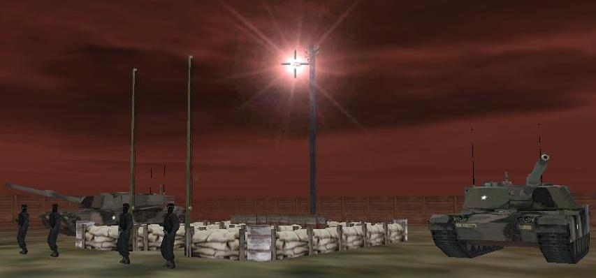

| SH2 | |||
| Autor : Vojtoo | |||
| Ostrov : Kolgujev | |||
| Velikost : 168 kb | |||
| Hodnocení | |||
| RP | Veøejné | Hlasováno | Sta�eno |
| 9/10 | 8,9/10 | 17x | 346x |
| Zobrazit autorùv popis mise | |||
| Stáhnout tuto misi | |||
| Zpìt na Ptákoviny | |||

Po dlouhé dobì jsem si opìt zahrál velmi hezkou misi a skoro bych
si dovolil tvrdit, �e typ mise ptákovina se k tomu opravdu nehodí. Velmi
dobøe hratelná mise plná tajemností a záhad. Nerozbaloval jsem ji v
editoru, co� vzhledm k bezproblémovému chodu nebylo nutné. Jedinı
problém jsem mìl v lese a to s rozhodnutím zda obš�astnit vílu èí
nikoli,  tady se pøíznám,
�e jsem se rohodl špatnì. Jak? To nebudu prozrazovat, jen by mì
zajímalo, jestli je tu pak nìjaké vyhodnocení získanıch budù, ale na nic
jsem bìhem hraní nenarazil. Mo�ná vas tu pøekvapi pou�itı funkce, která
znepøístupní hráèi cokoli ve høe, tak se toho neleknìte. Co vás ale
zøejmì pøekvapí nejvíce je konec. tady se pøíznám,
�e jsem se rohodl špatnì. Jak? To nebudu prozrazovat, jen by mì
zajímalo, jestli je tu pak nìjaké vyhodnocení získanıch budù, ale na nic
jsem bìhem hraní nenarazil. Mo�ná vas tu pøekvapi pou�itı funkce, která
znepøístupní hráèi cokoli ve høe, tak se toho neleknìte. Co vás ale
zøejmì pøekvapí nejvíce je konec.  Mù�u dodat u� jen to, �e misi chybí pouze dabing, co� by ji sice èinilo
velkou leè desítkovou. Snad Vojtu potìší to, �e mu dávám 9 jen za to,
�e tam ten dabing není. Tìším se na SH3.
Mù�u dodat u� jen to, �e misi chybí pouze dabing, co� by ji sice èinilo
velkou leè desítkovou. Snad Vojtu potìší to, �e mu dávám 9 jen za to,
�e tam ten dabing není. Tìším se na SH3.Didymos |